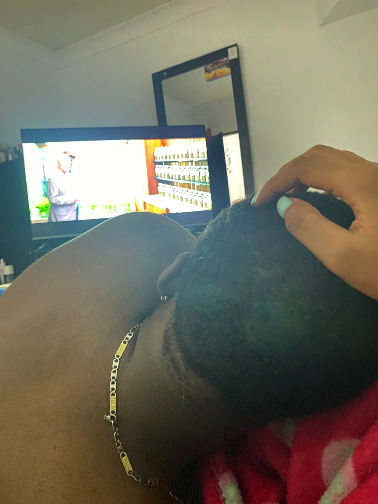

"El amor no consiste en mirar al otro, sino en mirar juntos en la misma dirección." - Saint-Exupéry
Te Extraño Tanto...
Desde que no estamos juntos, cada día se siente incompleto. Extraño el sonido de tu risa, la forma en que me mirabas y las charlas sin fin. A veces, desearía que el tiempo retrocediera solo para vivir esos momentos una vez más. Estos recuerdos son lo único que me mantiene hasta que nuestros caminos se vuelvan a cruzar.
